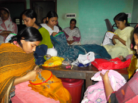

VAROSHA
Varosha Tailoring and Sewing Schools

The centers provided free vocational training in impoverished districts of Kolkata, Bardhaman, Rajpur/ Sonarpur, Thakurpukur,Goragacha and Birbhum. The students were previously working as day laborers and reliant on the income. Varosha provided stipends to meet their living expenses while they are being trained.
The school later offered a “Second-level Advanced Training Program,” through which students could become “Master Tailors” and improve their professional opportunities. The schools trained many students who are now gainfully employed and self-sufficient. It also served as a center where community members could seek support from fellow students and teachers.
The school later offered a “Second-level Advanced Training Program,” through which students could become “Master Tailors” and improve their professional opportunities. The schools trained many students who are now gainfully employed and self-sufficient. It also served as a center where community members could seek support from fellow students and teachers.